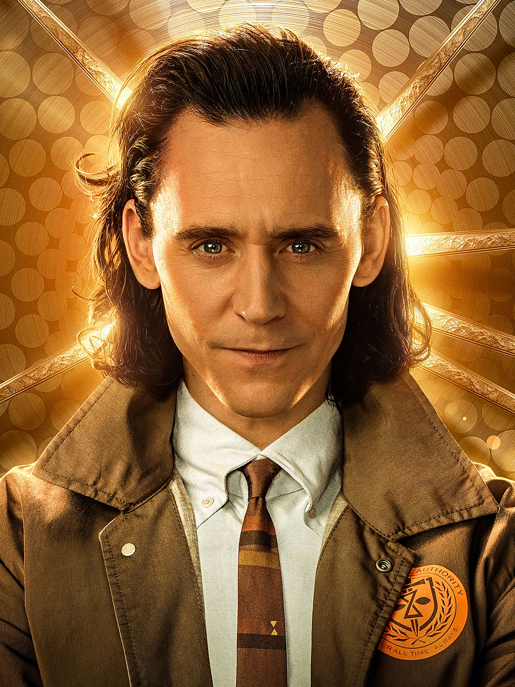

In the show "Loki" by Disney, there comes a point when the main character, Loki, meets many different versions of himself, starting with Sylvie, a female version of himself. Later in the show, he meets many copies of himself, an old Loki who is undeniably more powerful than the Loki form our universe, an aligator Loki who comes from a universe where all people are aligators, a more evil Loki who resembles our Loki in every way, and so on. So just how is this possible? The Multiverse Theory.
Let us start with an example. Say you have a straw, any kind of straw, and in that straw is your universe. Then, you realize there are multiple other straws scattered around you, all facing the same way. Each of these straws is also its own seperate universe, with different versions of you. You then take all the straws and bundle them together, allowing the whole of the straws to create one large timeline of different universes, all with their own events and people. Each thing in every universe has some correlation to that thing's "copy" in the universe next to them. In "Loki" we see just that.
Test